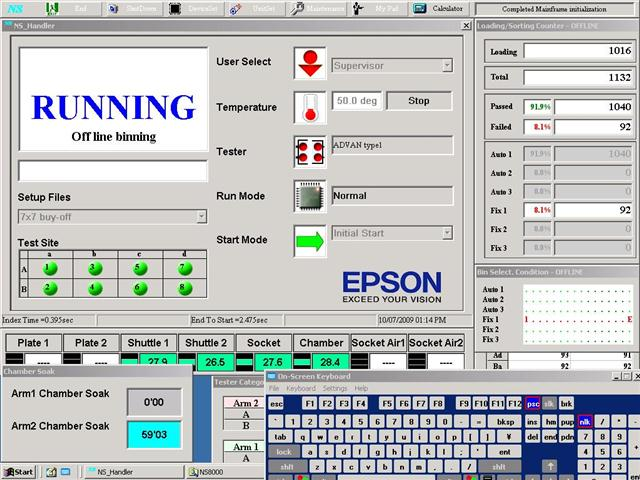
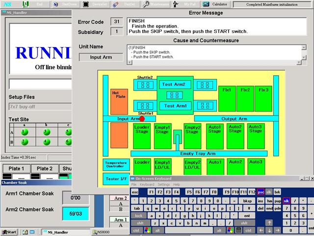

Service History
Subject: UTAC NS-8080 Chamber soak time and Retrofit InLine 4 site
Handler Model: NS-8080 (S/N:181641)
Controller: RC520
Date: 8 Oct 2009
Symptom
1. Chamber soak time
In temperature parameter, high mode setting, when set chamber soak time( example: 3600s ).
When device place on the input shuttle before going into chamber and jamming occur, after clearing jam and press start, the chamber soak timer will display on screen and count down from 3600s.
When I pressed pause + reset during timer count down, the timer will stop. When i press start again the timer will remain same. Until the handler clean out and finish cycle the timer display still remain on the screen. Not sure if this is bug. I will confirm again and send screenshot if possible tomorrow.
2. No retrofit inline 4 site
As advised from you, reinstall HMI and select retrofit handling, setup will have retrofit inline 4 site.
But before reinstall HMI, I tried inline 4 site(4x1) with NS6000 4x1 change kit installed. Output shuttle is with thru holes. Check "Use Gate device exist sensor", and handler able to run. Actually I should use retrofit inline 4 site? normal inline 4 site is for NS8040?
Operation manual state that vacuum/coutner air ports for retrofit inline 4 site are different from inline 4 site but now I can also run NS-6000 changekit with normal inline 4 site selected and Gate sensor checked. Pls confirm on this.
Action
1) For chamber soak timer display hang up, I confirmed again and attached pictures(both timer remain same after reset start and cycle finish). Sequence is during chamber soak timer countdown, press pause+reset, soak timer display will stop, even after resume operation by start button.
Also when arm 1 pickup devices for chamber soak, timer display is showing arm2 chamber soak...
Encountered retrofit handling option not in setup option, have to re-install HMI and enable option. Tried to run normal inline 4 site with gate device exist sensor checked and handler able to run.
Chamber soak timer hang up on HMI screen after pause+reset during chamber soak time countdown. Even after cycle finish, timer still on HMI screen.


2) I confirmed Your operation is perfect.
Even if you use retrofit Inline4 CK, you select “Inline 4 sites(4x1)” and “Use gate device exist sensor”
I selected Inline 4 sites(4x1) and able to run without having to check "Use gate device exist sensor". So it is running fine with side fiber sensor.
So when do we need to use Retrofit Inline 4 sites(4x1)? When i use this setup, index arm vacuum ports used are e,f,g,h. So encountered Start Error. But manual already state NS8080 use this Retrofit Inline 4 sites(4x1). Pls clarify on manual information.
Confirmed with Hidaka san NS8080 running retrofit kit 1x4 sites use normal inline 4 sites option in setup menu. If select ¡°Retrofit inline 4 sites¡± option, index arm use vacuum ports e,f,g,h and encounter Start Error.
Cause